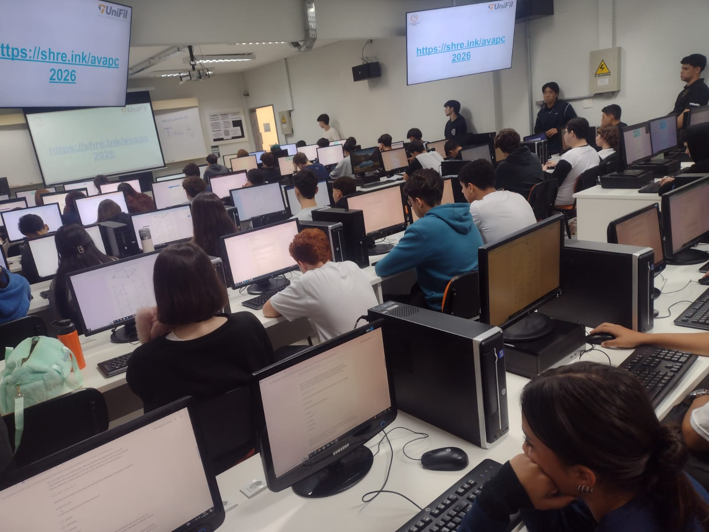
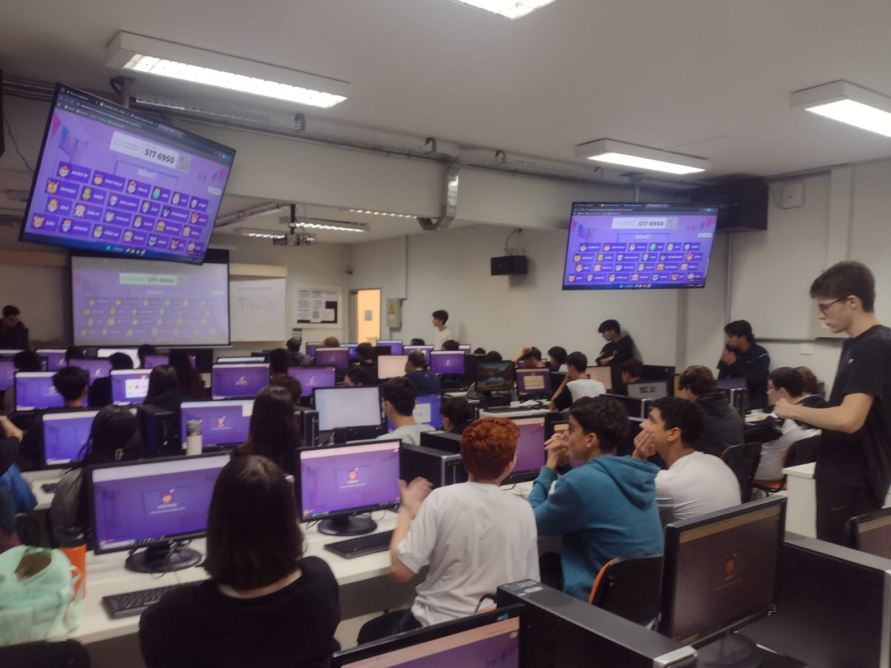
A primeira parte da aula do dia 12/05 foi uma introdução do Pensamento Computacional para os alunos, onde o instrutor Victor Andrade apresentou a finalidade do projeto, e porque seria interessante aos alunos fazerem parte do Pensamento Computacional.
Em seguida, os alunos foram colocados para fazer uma prova para avaliar se eles devem entrar para a turma básica, intermediária ou avançada do projeto. Percebi que alguns dos alunos tiveram dúvida sobre como responder uma questão de A a E, onde eles deveriam identificar o último número da sequência e responder, a dúvida era sobre como colocar a resposta, então instruí-los a colocar a letra, e o número em sequência, por exemplo: A 2, B 3…
No final, eles fizeram um kahoot com perguntas relacionadas a computadores em geral, como qual a função de um teclado, identificar um cabo de rede através de uma imagem, e reconhecer um programa, como o microsoft word, através de uma imagem dele.
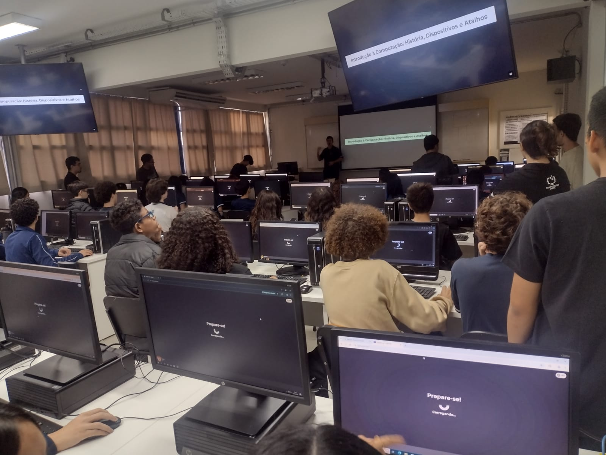
Na aula de hoje o Luiz explicou um pouco sobre as turmas básicas e intermediárias e apresentou slides sobre os primeiros computadores, dispositivos de entrada e saída, sistemas de operação, também mostrou um disquete e placa de rede.
Parte dos alunos não estavam no projeto semana passada, portanto foram fazer a avaliação diagnóstica em outra sala.
O Luiz e o Gabriel Koga também realizaram um experimento, utilizando uma fonte de bancada para queimar um LED e um disjuntor, o qual pegou fogo, para esse experimento eles chamaram três alunos para auxiliar na condução de tal.
No final da aula eles realizaram um Kahoot com os conteúdos dos slides, para ver se os alunos prestaram atenção na aula.
Os alunos não precisaram de minha ajuda, com exceção de um, que não conseguia ligar o computador.
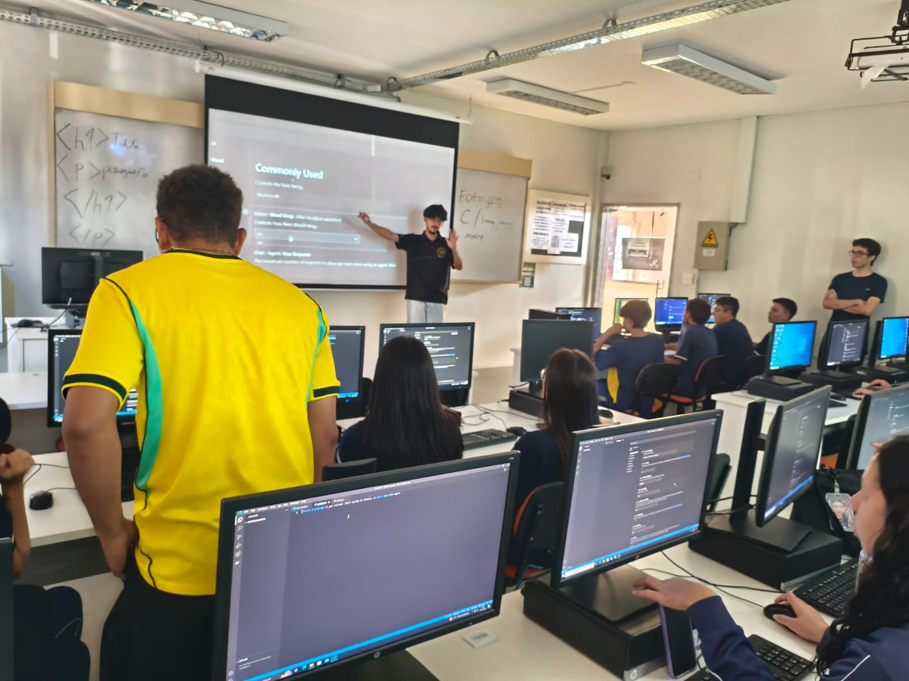
Nessa aula o Koga explicou sobre os diferentes formatos de arquivos (txt, jpg, png), seus usos, explicou como funciona o caminho do arquivo, como encontrá-lo, explicou também sobre o nome e o conteúdo dos arquivos.
Ele também instruiu os alunos a configurarem um pouco o Visual Studio Code, e depois pediu para que criassem um html com um h1 e p, para exercitarem as tags do VSC.
Só um aluno requisitou minha ajuda, pois não tinha o nome na chamada, tirando isso eles conseguiram seguir a aula sem problemas
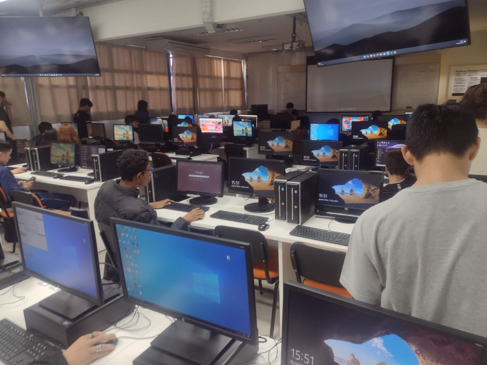
Nessa aula os alunos aprenderam sobre HTTP, DNS, domínios, WEB, HTML e GitHub.
No começo da aula foi pedido aos alunos que criassem uma conta no GitHub, para que no futuro possam guardar suas atividades feitas na aula, visto que os computadores são de uso público.
Fui obrigado a rotear minha internet para um aluno poder criar sua conta no GitHub, pois a internet Unifil Alunos, a qual ele tinha acesso, não pega no andar do Pensamento Computacional, e os seus dados móveis já tinham acabado.
Depois que as contas foram criadas, o Gabriel Koga começou a ensinar sobre WEB, ele explicou que o protocolo HTTP e HTTPS tem o “HT” (HyperText) em comum com o HTML, pois eles estão ligados à mesma área da página.
Em seguida ele explicou sobre DNS, que cada site tem um conjunto de números (8.8.8.8, por exemplo) para o representar no lugar do link normal (https://google.com)
Depois sobre os domínios, como .com, .br, .pr, e que o mais à direita é sempre o domínio principal, e aqueles que vem antes são subdomínios do seguinte (.com.pr.br nesse domínio, o .com seria subdomínio do .pr, que é subdomínio do .br).
Após a explicação sobre domínios, o Koga começou a explicar sobre HTML, ele falou sobre as tags, como head, header, body, html, e depois sobre listas (ol e ul), img, e mais algumas outras.
No final, era para ter sido realizada uma atividade, entretanto não havia tempo o suficiente, portanto ela será realizada semana que vem.
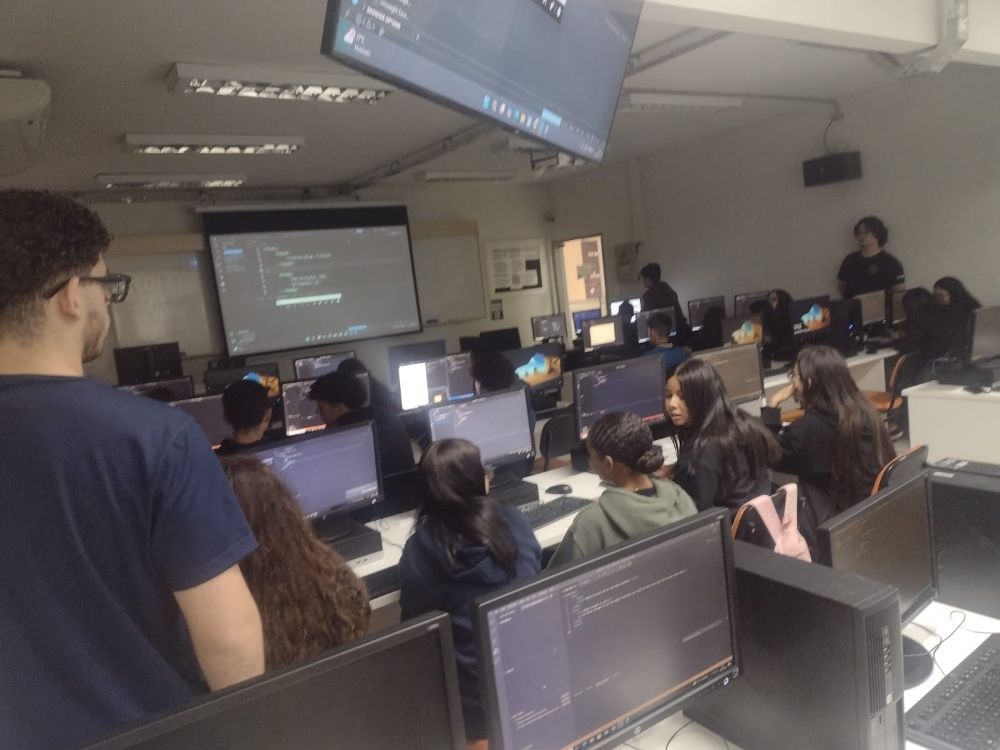
No início da aula o Koga ofereceu dar um resumo sobre web e html ou apenas sobre html, para relembrar o conteúdo da aula passada, como alguns escolheram sobre web, ele retomou parte do conteúdo sobre web da aula passada, especificamente sobre DNS e a estrutura de links, como www, protocolos e domínios.
Depois ele foi para HTML, onde deu aula sobre html e html5, explicando várias tags como o <header>, onde ficam os metadados, o <body>, que contêm o conteúdo principal do site, as tags diferentes como <br> e <img>, que não precisam ser fechadas, e também como colocar tanto imagens quanto links no html.
Após o Koga explicou sobre as listas, <ol> e <ul>, onde <ol> é uma lista ordenada e <ul> é uma lista normal com pontos, e por fim um pouco sobre boas práticas, onde é preferível usar apenas letras minúsculas nas tags, pois virou algo uniforme, não salvar arquivos com espaço e nem acentos.
No final da aula ele realizou um exercício prático com os alunos, onde eles deviam criar uma página com o seu nome, uma imagem, e uma lista de hobbies e um site favorito.
Teve um aluno que não estava conseguindo colocar nenhuma imagem, não estava funcionando, e eu só fui descobrir depois da aula que isso acontecia pois primeiro ele tinha pego um gif, e depois png falso, portanto não pude ajudá-lo.
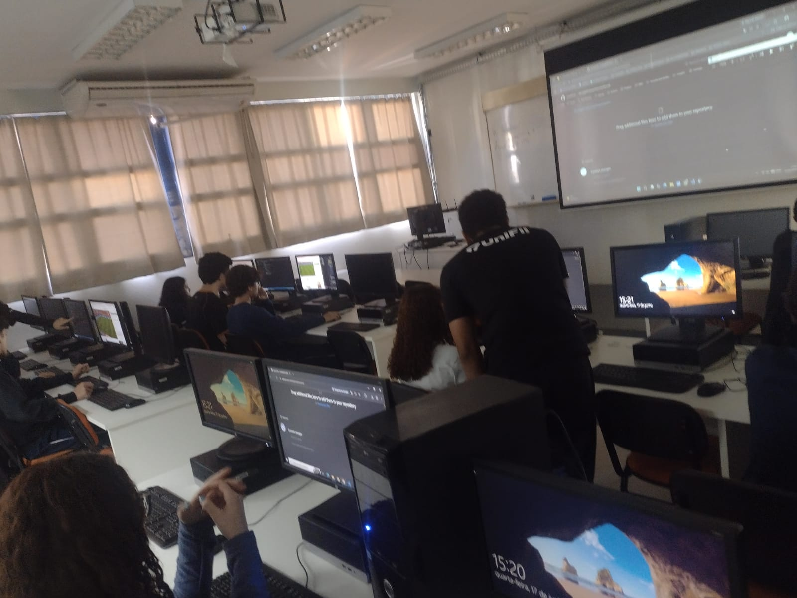
No início da aula de hoje os alunos retomaram a página que eles haviam feito na última aula, contendo o nome, site favorito, uma imagem, e uma lista de hobbies, o intuito era arrumar a página para colocar no github, e transformar daí em um site.
Uma boa parte da aula foi destinada à arrumar a página antes de fazer o upload dela, e ao Koga tirando dúvidas dos alunos, e a outra parte à fazer upload e mexer no github.
O Koga ensinou como criar um repositório, e depois como fazer upload dos arquivos nele, dando ênfase que o html precisava se chamar “index.html”, caso contrário o github não criaria o site.
Uma aluna, como ela não estava usando o mesmo computador da aula passada, editou uma página de outro aluno, e foi colocar uma imagem, visto que não só a dele não tinha, mas também ela queria por uma própria, ela acabou cometendo um erro e salvou o site de notícia que continha imagem, no lugar da imagem em si, mas isso foi simples de arrumar, entretanto o inesperado foi na hora de visualizar o site já hospedado no github, onde no navegador Chrome a imagem simplesmente não carregava, diferente do Edge, onde ela carregava.
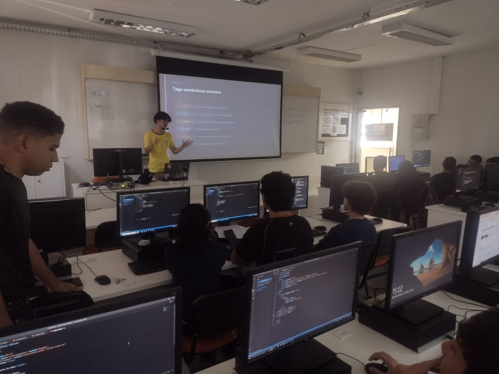
Nessa aula os alunos aprenderam mais sobre os atributos do HTML, incluindo id, class, target, width e height.
A aula de hoje começou com o Koga revisando os atributos do HTML, como id, class, src, alt, e explicou como usá-los, dando maior ênfase no id e class, visto que os alunos já estavam familiarizados com o src e alt.
Primeiro ele falou do start e reversed, para alterar o número e a ordem deles em uma lista OL, e instruiu os alunos a testarem junto dele, para fazerem uso desses atributos. O Koga também passou um pouco por width e height, mas foi apenas uma explicação breve, seguindo para id e class, explicando que id e class seriam semelhantes, porém id deve ter apenas um uso único, enquanto class pode ser usado várias vezes, no meio dessa explicação o class foi usado para estilizar um parágrafo dentro do html. Em seguida o Koga falou sobre o atributo target, especificamente sobre _self e _blank, onde ao abrir um link, com o target é possível selecionar se ele vai abrir na mesma guia, usando _self, ou em uma nova guia utilizando o _blank.
No final da aula os alunos foram instruídos à melhorar o site que fizeram na última aula, utilizando os atributos ensinados nessa aula
Percebi que na hora de estilizar a classe no html, dois alunos não estavam utilizando “;”, portanto a primeira linha com color ainda estava aberta, e não estava deixando criar a seguinte, isso provavelmente foi pois não estão acostumados a usar algo que não seja html.
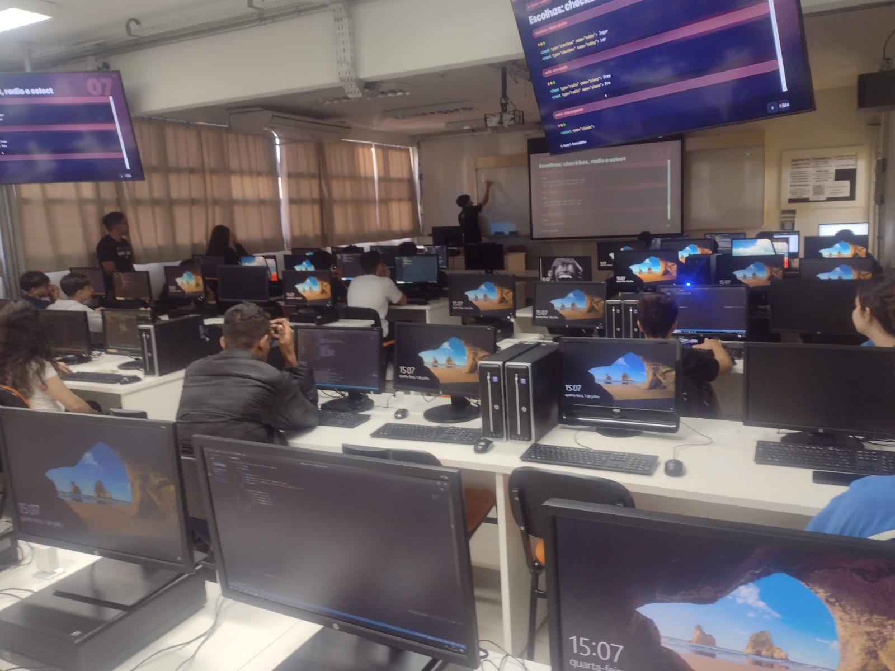
Na aula de hoje os alunos aprenderam sobre forms no html, sobre label, input e seus tipos, e os atributos.
O primeiro momento da aula foi reservado para que os alunos terminassem a atividade da aula passada.
Em seguida, para começar a aula o Koga explicou o que é um formulário no html, e por que ele é importante, depois explicou sobre os atributos action e method, seus usos, e em seguida ele falou sobre as tags input e label, e como o input serve para selecionar a propria entrada de dados do formulário, e o label para informar o que é desejado naquela entrada, sendo o atributo for usado para ligar o input ao label, os tipos de input, como o radio, checkbox, text, email, password, etc, a tag textarea, para abrir uma caixa de texto maior, e a tag select, junto de option, para abrir uma lista de seleção, e as options sendo opções dentro dessa mesma lista.
Por fim, os alunos foram instruídos a criar um formulário pedindo nome, senha, email, selecionar o gênero (masculino, feminino ou outro), e uma lista usando select para selecionar a cidade. E para encerrar os alunos deveriam publicar no GitHub para manter salvo.
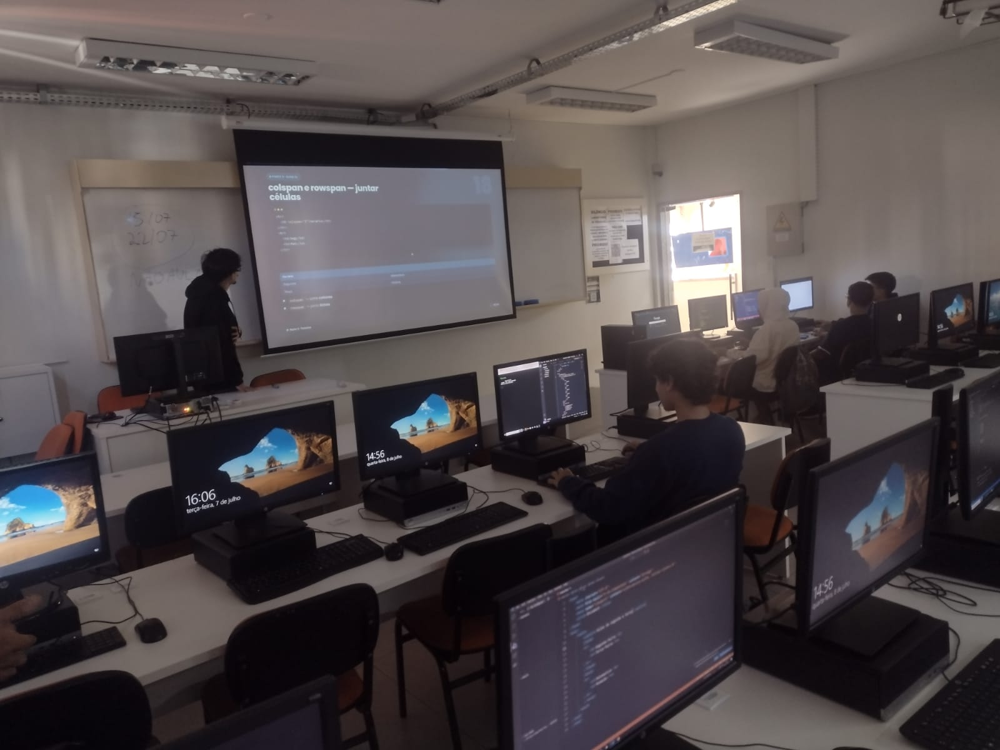
Na aula de hoje os alunos aprenderam sobre tabelas e css.
A aula começou com o Koga oferecendo aos alunos terem uma aula de css, ou sobre tabelas do html, e como a maioria escolheu tabelas, esse foi o conteúdo da aula de hoje. Em seguida ele deu uma leve revisão sobre formulários, visto que vários alunos não estavam na última aula, e então ele deu sequência ao conteúdo de tabelas.
Primeiro o Koga explicou que seriam tabelas semelhantes às do excel, porém em html (table), e seguiu para as tags, começando com tr e th, onde tr seria uma linha e th o cabeçalha coluna, depois td, que seria um dado da tabela.
Depois ele introduziu thead e tbody, que separam o cabeçalho do conteúdo da tabela, e mostrou como devem ser colocados no html, e então mostrou o colspan e rowspan, que servem para unificar elementos na coluna e na linha, respectivamente, transformando vários elementos em uma só coluna ou linha.
Após isso, ele mais uma vez ofereceu uma escolha aos alunos, estilizar a tabela dentro do html, ou com um css separado, dessa vez o css ganhou, então o Koga ensinou aos alunos como linkar um css, e também como estilizar a table, th e td.
Para finalizar a aula, os alunos realizaram um exercício de montar uma tabela com os horários de uma escola, com todos os dias da semana e, pelo menos, três aulas por dia. A maioria obviamente optou pelos horários da própria escola.
Eu notei que um dos alunos que eu estava monitorando simplesmente não indenta o código, e talvez por isso ele não havia fechado as tags tbody, tr e thead corretamente.
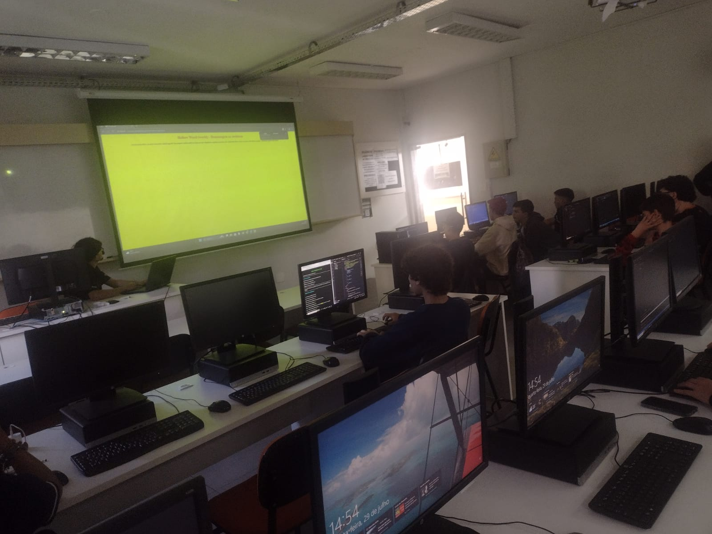
Na aula de hoje o Koga ensinou como funciona o CSS.
Para começar ele ofereceu uma escolha aos alunos, começar com um blooket e depois a aula, ou então começar com a aula e no final o blooket, praticamente todos preferiram a segunda opção, então foi assim que ele seguiu.
Antes do CSS, o Koga deu uma revisão sobre HTML, para relembrar os alunos, visto que já estavam 2 semanas sem aula.
No CSS ele explicou a estrutura do seletor, que pode ser qualquer tag do html, id, classe, também mostrou especificação, indo atrás de uma tag dentro de outra tag, dentro de outra tag, assim em diante.
O Koga usou principalmente color, background-color e font-size para mostrar como o CSS funciona, no começo ele usou apenas h1 e p, mas depois ele foi trocando por class, id, usando os três ao mesmo tempo para ver como o código no html se comporta, também mostrou que criar uma classe com dois nomes e espaço, como “animal terrestre” resulta na criação de duas classes, uma “animal” e outra “terrestre”, o que permite reutilizar estilizações, também mostrou que é possível colocar mais de um seletor, semelhante à classe, e no final ele pulou a atividade proposta nos slides e foi para o blooket.
Uma coisa que eu achei meio injusta no blooket foi que no segundo jogo, que era um battleroyale em equipe, um dos monitores acabou jogando e, isso pode ter influenciado o time dele, que acabou em primeiro lugar.
Não precisei ajudar os alunos na minha fileira em nada, visto que a aula foi bem simples e teórica, além de que o CSS é bem intuitivo. Apenas tive que sair da conta deles do github, visto que foram embora e esqueceram de sair das contas.